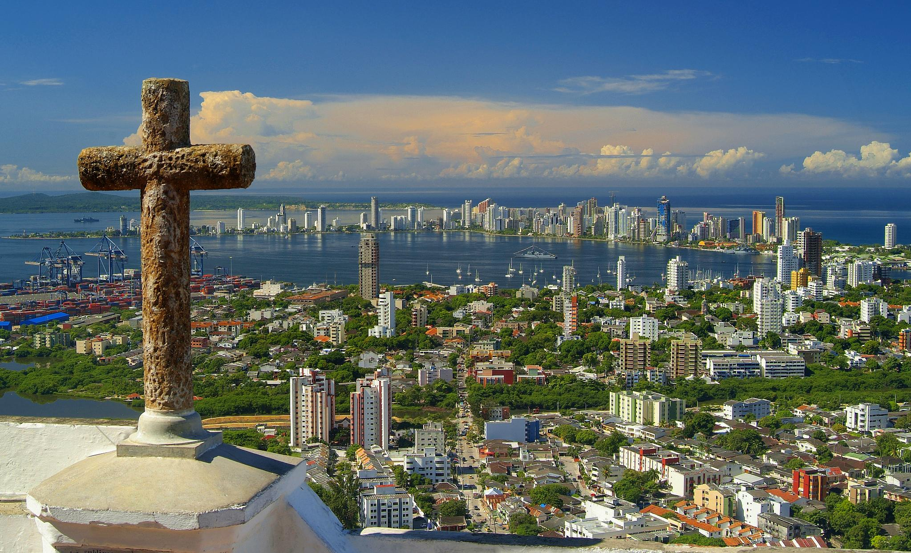

Nuestros Tours
1. Recorrido por el Centro Histórico (2 horas)

Sumérgete en las vibrantes calles de Cartagena, donde cada esquina cuenta una historia de piratas, conquistas y leyendas ancestrales. Descubre sus coloridas fachadas coloniales, impregnadas de arte y cultura, mientras te maravillas con las impresionantes iglesias, plazas y balcones adornados con flores que parecen sacados de un cuento de hadas. Vive la magia de caminar por una ciudad que es patrimonio de la humanidad, donde cada paso te transporta al pasado en medio de un ambiente tropical que te dejará sin aliento.
2. City Tour
Incluye:
- Entrada al Convento de La Popa (la mejor vista de la ciudad)
- Parada fotográfica en el Castillo de San Felipe de Barajas
- Caminata por la Ciudad Amurallada (compras opcionales)
3. Tour a Palenque

Descubre el primer Palenque libre de América, un tesoro vivo de la cultura africana en el corazón de Colombia. Adéntrate en sus calles llenas de historia y orgullo, donde las tradiciones ancestrales se mantienen vivas a través de la música, la danza y los vibrantes colores que decoran cada rincón. Deléitate con su exquisita gastronomía autóctona, donde los sabores africanos se mezclan con ingredientes locales para ofrecerte una explosión de sensaciones. Sumérgete en las historias de resistencia y libertad, contadas por los propios descendientes de los esclavos que lucharon por su emancipación, en un lugar donde el pasado y el presente se entrelazan en una experiencia cultural única que te transformará.
4. Visita al Volcán del Totumo

Sumérgete en las cálidas y curativas aguas del volcán de lodo medicinal, una maravilla natural única a pocos minutos de Cartagena. Deja que las propiedades rejuvenecedoras del lodo envuelvan tu cuerpo, mientras te relajas flotando en su misteriosa y espesa textura. Vive una experiencia ancestral que, según la leyenda local, no solo revitaliza tu piel, sino que también equilibra cuerpo y mente. Disfruta de un masaje natural que solo la naturaleza puede ofrecer y lleva contigo la sensación de bienestar y renovación que sentirás desde el primer contacto.
Comentarios y Calificaciones
Pedro Perez
Calificación: ★★★★★
Muy Buen Servicio Recomiendo el tour A Palenque